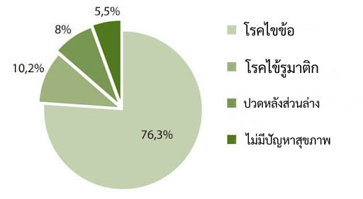
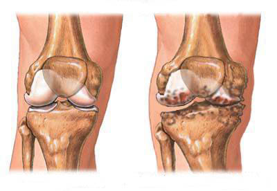
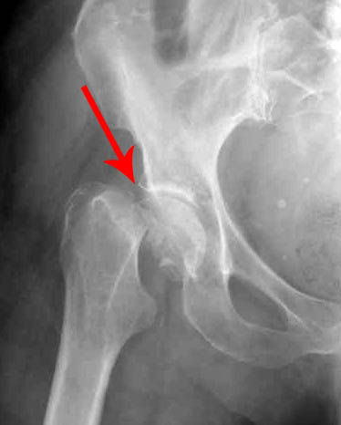
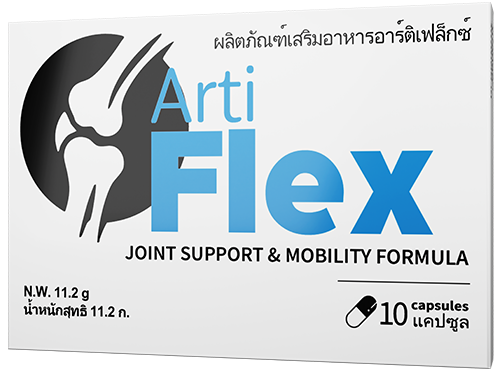

มรดกทางวิทยาศาสตร์ไทยถูกแบน: ส่วนผสมการเยียวยาจากธรรมชาติ 4 ชนิดช่วยขจัดอาการปวดข้อทันที ฟื้นฟูกระดูกอ่อน และฟื้นฟูร่างกายอย่างเหลือเชื่อ!
- สุขภาพ
- ความงาม
- ข่าวในประเทศไทย
- ผู้คน
- เรื่องราว
ใครได้ประโยชน์จากผู้สูงอายุที่ซื้อผลิตภัณฑ์ไร้ประโยชน์ที่โฆษณาขายในร้านขายยา แต่พวกเขาไม่รู้เกี่ยวกับผลิตภัณฑ์ที่มีอยู่ซึ่งมีมานานมาแล้ว
ในระหว่างการถ่ายทำรายการ สถาณการณ์ไม่คาดฝันเกิดขึ้น คุณหมอต้องเอาชื่อเสียงมาเสี่ยงอยู่บนเส้นด้าย นายแพทย์คมสันต์ เชิดชูตระกูล ต้องตอบคำถามที่น่ากระอักกระอ่วนใจ
หนึ่งในผู้เชี่ยวชาญที่ได้รับเชิญมาในครั้งนี้คือ นายแพทย์คมสันต์ เชิดชูตระกูล กับการซ่อนข้อมูลเกี่ยวกับผลิตภัณฑ์ใหม่ สำหรับการเยียวยาข้อต่อ รวมถึงการวิ่งเต้นเพื่อผลประโยชน์ของเจ้าของเครือข่ายร้านขายยาและบริษัทยาที่เกี่ยวข้อง
“คนหลายล้านคนต้องพิการในทุกปี! ทุกวันเรากำหนดสถานะของกลุ่มผู้พิการ ให้กับผู้ป่วยของเราหลายร้อยคน! และนี่คือผลิตภัณฑ์ที่มีประสิทธิภาพใหม่ที่สามารถช่วยคุณได้ในทุกกรณีไม่ว่าจะรุนแรงแค่ไหน
ทำไมสิ่งนี้ถึงเกิดขึ้น ในขณะที่หลายคนกำลังเตรียมต้องนั่งเก้าอี้รถเข็น จ่ายเงินจำนวนมากให้ร้านขายยา เพื่อการรักษาที่ไร้ประโยชน์และไมได้ผล ต้องทนทุกข์ทรมานจากความเจ็บปวด คุณคงไม่อยากพลาดวิธีการเยียวยาที่สามารถช่วยคนเหล่านีไ้ด้ใช่ไหม
ใช้ครับ เราอยู่เมืองไทย ที่เจ้าของร้านขายยาไม่นึกถึงคนไทยเลย
คุณลืมเกี่ยวกับคำสาบานในอาชีพของคุณ! ตอนนี้ทุกคนต่างกลัวเชื้อไวรัสยังไม่พอ คุณเอาโรคนี้มาข่มขู่คนไข้ และคุณเองก็รู้ว่าผู้คนจำนวนมากต้องทุกข์ทรมานจากโรคข้อต่อมากขึ้นทุกวันนับพัน ๆ คน! และพวกเขาต้องทนเจ็บปวดและทรมานทุกวัน! และต้องเจ็บหนักที่คุณคาดไม่ถึง!
แล้วผู้จัดการที่นั่งอยู่ในสำนักงานสบาย ๆ และพักผ่อนในต่างประเทศล่ะ? คุณคิดว่าพวกเขาสนใจคนธรรมดาหรือเปล่า? พวกเขานั่งทำงาน เล่นเล่นคลิปหนีบเอกสารไปวัน ๆ ไม่สนใจคนตาดำ ๆ ที่กำลังรอความช่วยเหลืออยู่ด้วยความหวังสุดท้ายของพวกเขา
ไม่เชื่อผมหรือครับ สถิติมันเป็นตัวเลขที่เพิ่มมากขึ้นจนน่ากลัว

มีเพียง 5% ของประชากรที่โชคดีไม่ป่วยเป็นโรคกล้ามเนื้อและกระดูก แสดงให้เห็นว่า 95% ของคนไทยเป็นโรคข้อบางประเภท แน่นอนว่าโรคข้ออักเสบและโรคข้อเป็นโรคอันดับต้น ๆ
ประชากรทุกสองคน 2 ที่เป็นโรคข้ออักเสบขั้นรุนแรงทุกคนต้องนั่งรถเข็น!
แล้วในกรณีที่หลังได้รับผลกระทบเหล่านี้จะเกิดอะไรขึ้น
ใน 99% ของกรณีนี้นำไปสู่ความจริงที่ว่า ไม่ใช่ทุกคนที่พร้อมจะดูแลญาติที่ป่วยหนักติดเตียง ผมมักจะสังเกตเห็นภาพดังกล่าว ที่ญาติ ไม่สามารถดูแลผู้ป่วยติดเตียงได้ และผู้ป่วยต้องถูกทอดทิ้งไว้ตามโรงพยาบาลหรือสถาณสงเคราะห์ และต้องทนอยู่ด้วยความโศกเศร้า
แต่นี่ไม่ใช่สิ่งที่เลวร้ายที่สุดนะครับ
โรคข้ออักเสบรูมาตอยด์เพิ่มอุบัติการณ์ของภาวะแทรกซ้อนของลิ่มเลือดอุดตันในหลอดเลือดดำ ซึ่งโดยทั่วไปแล้วอาการแทรกซ้อนนี้ทำให้ผู้ป่วยถึงแก่ชีวิตใน 98% และสาเหตุอื่นๆ ของการเสียชีวิตจากโรคข้อ ได้แก่ ภาวะแทรกซ้อนจากการติดเชื้อและภาวะไตวาย
เมื่อคุณรับรู้ถึงความเสี่ยงสูงที่มีชีวิตผู้ป่วยเป็นเดิมพันแล้ว คุณกล้าที่จะไม่ปล่อยให้ขายสินค้าที่สามารถช่วยคนนับล้านในประเทศของเราได้อย่างไร? จะต้องเป็นคนไร้มนุษยธรรมขนาดไหนกับครับ! "
ผู้เข้าร่วมโปรแกรมที่เหลือฟังหมออย่างเงียบๆ ด้วยตาปริบ ๆ
แน่นอน คุณหมอไม่ได้รับอนุญาตให้พูดจนจบ หมอต้องถูกเชิญตัวออกจากสตูดิโอ และตอนนี้ภาพถูกตัดจากออกจากอากาศ แต่ผู้ชมในสตูดิโอจำได้ดีถึงความกล้าหาญของคุณหมอที่ออกมาพูดความจริง
จนเราพยายามไปตามตัวหาคุณหมอคนนี้จนพบและขอสัมภาษณ์คุณหมอ พบกับศาสตราจารย์คมสันต์ เชิดชูตระกูล ผู้เชี่ยวชาญด้านโรคข้อชั้นนำของประเทศ
นายแพทย์คมสันต์ เชิดชูตระกูล - ศาสตราจารย์ แพทยศาสตร์ หัวหน้าภาควิชาโรคข้อ
- สวัสดีครับคมสันต์ สิ่งที่คุณหมอออกมาพูดช่ากล้าหาญมาก ๆ เลยครับ ในรายการ คุณหมอไม่กลัวที่จะกล่าวหาเพื่อนร่วมอาชีพ ด้วยคำพูดและถ้อยคำรุนแรงเลยได้อย่างไรครับ
ผมคิดว่ามันไม่ใช่เรื่องที่ควรจะเงียบเฉยได้ คนเหล่านี้เป็นผู้จัดการนั่งอยู่ในสำนักงานและลงนามในเอกสาร และทุกวันผมเจอผู้ป่วยที่มาหาผมด้วยเข่าหรือขาที่บิดเบี้ยว อาการเจ็บปวดอย่างมาก ผมรู้วิธีช่วยเหลือพวกเขา แต่ผมทำไม่ได้เพราะเภสัชกรที่ไม่รู้จักพอและเครือข่ายร้านขายยาที่โลภมาก
หลายๆ กรณีเกิดการรักษาล่าช้า ข้อต่อถูกทำลายอย่างหนัก จนไม่สามารถใช้ชีวิตได้ตามปกติ
-คุณหมอได้ให้ข้อมูลที่น่ากลัวมากเลยครับ สำหรับโรคข้อต่อ โรคนี้สามารถนำไปสู่ผลร้ายแรงเช่นนี้ได้จริงหรือเปล่าครับ
นี่เป็นความผิดพลาดที่ใหญ่ที่สุดที่หลายคนทำ - คือการประเมินปัญหาต่ำไป ข้อต่อไม่เริ่มเจ็บขึ้นมากะทันหัน เพราะว่ามันไม่ใช่ไวรัสที่จะเกิดขึ้นได้ในระยะเวลาอันสั้น อาการปวดข้อค่อย ๆ เกิดขึ้นทีละน้อย จนบางคนรู้สึกเคยชินกับอาการปวดและทนปวดมาเรื่อย ๆ

การรักษาที่ล่าช้าหลายๆ อย่าง ไม่ใช้มาตรการที่เหมาะสม หากใช้ยาแก้ปวดในการบรรเทาอาการ โรคก็จะลุกลาม ทำลายข้อต่อ แลทำให้ไม่สามารถเคลื่อนไหวได้ตามปกติอย่างเคยอีกต่อไป
ในเวลาเดียวกัน โรคข้ออักเสบมักส่งผลกระทบต่อประชากรในวัยทำงาน หลายคนต้องกลายเป็นคนพิการ หรือต้องทนกับความเจ็บปวดอยู่ต่อไปเพื่อหาเลี้ยงชีพ
ตามข้อมูลอย่างเป็นทางการของประเทศไทย มีผู้ป่วยโรคข้ออักเสบมากกว่า 5 ล้านคน และคนไทยประมาณ 700,000 คนต้องทนทุกข์ทรมานจากโรคข้ออักเสบรูมาตอยด์ (ประมาณหนึ่งในสามเป็นผู้พิการขั้นรุนแรง)
ความถี่ของโรคข้ออักเสบและโรคข้อกำลังเพิ่มขึ้น ดังนั้นในช่วงปี 2553-2563 อุบัติการณ์การเกิดโรคข้อเข่าเสื่อมเพิ่มขึ้น 48% โรคข้อเข่าเสื่อมเกิดขึ้นในผู้ป่วยทุก 3 รายของผู้ป่วยที่มีอายุ 45-64 ปี และใน 60–70% - อายุมากกว่า 65 ปี ขึ้นไป
จากข้อมูลพบว่าโรคข้อเข่าเสื่อมติดอยู่ในอันดับที่ 4 ในบรรดาสาเหตุหลักของความพิการในผู้ป่วยเพศหญิงและอันดับที่ 8 ในเพศชาย
ดูภาพนี้แล้วจะเห็นได้ว่าในภาพไม่มีช่องว่างระหว่างกระดูก กระดูกถูกัน ทำให้เกิดอาการปวดอย่างรุนแรง และเมื่อเกิดอาการแบบนี้แล้วจะรักษาได้ยากมาก!

คุณหมอคิดว่าการเสื่อมสภาพของเนื้อเยื่อและการสึกหรอของข้อต่อต้องใช้เวลานานแค่ไหน?
- ประมาณ 5-10 ปีหรือเปล่าครับคุณหมอ
ไม่ใช่ครับ! สิ่งนี้จะเกิดขึ้นในเวลาเพียง 2-3 ปี โดยเฉพาะอย่างยิ่งหากร่างกายขาดวิตามินและสารอาหาร หรือหากร่างกายอ่อนแอลงเพราะอาการป่วยเรื้อรัง หรือด้วยอายุที่เพิ่มมากขึ้น
- แล้วมีโรคแทรกซ้อนอะไรบ้างครับ และอะไรที่เป็นสาเหตุ
มีหลายเหตุผลมากเลยครับ
- โรคข้ออักเสบที่พบโดยทั่วไปมักเป็นโรครูมาตอยด์เป็นความบกพร่องของระบบภูมิกันที่ทำลายเซลล์ของตัวเองเนื่องจาก ระบบร่างกายคิดว่าเป็นเซลล์แปลกปลอม ดังนั้นระบบภูมิคุ้มกันของเราจะต้องแข็งแรงเพื่อจะสามารถรับมือกับโรคนี้ได้
- และทำให้เกิดโรคติดเชื้อ จากโรคข้ออักเสบ เช่น วัณโรค แท้งติดต่อกัน โรคข้ออักเสบที่เกิดจากโรคไลม์ เป็นต้น
- โรคที่ไม่ติดเชื้อ (โรคสะเก็ดเงิน, โรคลูปัส โรคเม็ดเลือดแดงและอื่น ๆ )
- ความผิดปกติของระบบเมตาบอลิซึม เช่น โรคเกาต์
สาเหตุหลักของโรคข้ออักเสบ
- การบาดเจ็บ – สาเหตุที่พบบ่อยที่สุด
- ความผิดปกติแต่กำเนิด (ความผิดปกติของข้อต่อและกระดูก) (เช่น dysplastic coxarthrosis บริเวณสะโพก) ในกรณีนี้ข้อต่อเคลื่อนที่มากเกินทำให้ข้อต้องรับน้ำหนักเพิ่มขึ้นและทำให้สึกหรอได้เร็วกว่าปกติ
- โรคข้ออักเสบเรื้อรัง (โรคข้ออักเสบรูมาตอยด์, วัณโรคลงข้อต่อ และอื่น ๆ ) ความผิดปกติของระบบเมตาบอลิซึมทำให้ในน้ำไขข้อไม่เพียงพอของกระดูกอ่อน เซลล์ที่ตายแล้วเกิดใหม่ได้ช้า ทำให้เซลล์ถูกทำลาย
- การออกกำลังกายมากเกินไป โดยเฉพาะอย่างยิ่งในนักกีฬาอาชีพ หรือในอาชีพที่ใช้ข้อต่อเยอะ เช่น ช่างเย็บผ้าส่วนใหญ่มักเกิดอาการข้ออักเสบที่มือ คนงานที่ใช้ค้อนทุบ จะมีปัญหาที่ข้อต่อข้อศอกและข้อไหล่ กล่าวอีกนัยหนึ่ง กระดูกอ่อนที่ได้รับความเครียดสูงสุดเป็นเวลานาน และทำให้ได้รับผลกระทบดังกล่าว
- ความผิดปกติของฮอร์โมน มักเกิดขึ้นในสตรีวัยทอง

สารสกัดจากส่วนผสมจากธรรมชาติบางชนิดได้รับการพิสูจน์แล้วว่าสามารถรักษาข้อต่อได้จริง!
- ในรายการ คุณหมอบอกว่าคุณรู้วิธีช่วยเหลือผู้ป่วยจากโรคนี้ จริงไหมครับ
ใช่ครับ มีนักวิทยาศาสตร์เก่ง ในประเทศไทยมานานแล้ว - ตั้งแต่ปี 2523 - ได้มีการคิดค้นผลิตภัณฑ์ที่มีประสิทธิภาพสำหรับการฟื้นฟูข้อต่อโดยใช้ สารสกัดจากพืชธรรมชาติที่ทรงพลังถึง 4 ชนิดในผลิตภัณฑ์เดียว!
- สารสกัดจากเขากวาง ส่วนประกอบจากธรรมชาติชนิดนี้มีฤทธิ์ในการระงับความเจ็บปวด และต้านการอักเสบได้เป็นอย่างดี ช่วยบรรเทาอาการปวดเฉียบพลันและบวมได้ทันที ไม่เป็นอันตรายต่อร่างกายเหมือนยาชาที่เป็นเคมีทั่วไป
- สารสกัดจากแปะก๊วย biloba ช่วยเพิ่มการไหลเวียนของเลือดในข้อต่อและฟื้นฟูกระบวนการเผาผลาญในร่างกาย ปรับปรุงหลอดเลือดและหลอดเลือดฝอย และยังช่วยกระตุ้นกระบวนการรักษาตัวเองของเนื้อเยื่อที่เสียหาย
- สารสกัดจากโคลชิคัม ช่วยเร่งกระบวนการเผาผลาญในกระดูกอ่อนเป็นปกติ ช่วยเพิ่มการสังเคราะห์คอลลาเจนและของเหลวในข้อต่อ และเริ่มกระบวนการสร้างเนื้อเยื่อใหม่ในระดับเซลล์
- สารสกัดจากฮาร์ปาโกไฟตัม ยับยั้งกระบวนการชราและการทำลายเนื้อเยื่อเกี่ยวพัน ปกป้องเนื้อเยื่อจากการสึกหรอก่อนวัยอันควร ปรับช่วยให้การผลิตฮอร์โมนที่ส่งผลโดยตรงต่อสภาพของกระดูกอ่อนและข้อต่อมีความสมดุล
ฉันทราบมาว่าหลายประเทศ แม้แต่ ญี่ปุ่นและเกาหลี ต่างก็สนใจที่จะค้นคว้าเกี่ยวกับผลิตภัณฑ์นี้ ในบางประเทศได้เริ่มการวิจัยไปแล้ว และบางประเทศก็ได้ผลลัพธ์ที่น่าทึ่ง! แต่น่าเสียดายที่สูตรนี้ไม่ได้มีการพัฒนาและผลิตต่อ มันเลยจบลงแค่นั้น
และเมื่อไม่นานมานี้เองที่นักวิทยาศาสตร์ก็พยายามฟื้นคืนสูตรนี้ขึ้นมาได้ และผมได้รับเชิญให้ไปควบคุมและดูแลโปรเจคนี้ เป็นเวลาหลายปีที่เราได้พัฒนาสูตรให้เข้ากับเทคโนโลยีใหม่ จนกระทั่งเราได้สร้างวิธีการเยี่ยวยาที่ไม่เหมือนใครซึ่งสามารถช่วยเหลือผู้ป่วยที่เป็นโรคข้ออักเสบ โรคข้อต่ออื่นๆ ที่ร้ายแรงที่สุดได้ด้วย - Arti Flex

Arti Flex ทำได้มากกว่าการฟื้นฟูข้อต่อ! ด้วยสารสกัดจากธรรมชาติ ที่สามารถเยียวยาเราได้ทุกส่วนของร่างกาย!
จากการวิจัยพบว่าสารสกัดในอาหารเสริมนี้สามารถช่วยเสริมสร้างภูมิคุ้มกันได้! ผู้ป่วยมากกว่า 90% ที่ใช้ผลิตภัณฑ์นี้เป็นเวลาหนึ่งเดือนขึ้นไป สังเกตได้ชัดเจนว่าสุขภาพของพวกเขาดีขึ้น - ความดันโลหิตกลับมาเป็นปกติ และมีคุณภาพชีวิตที่ดีขึ้น โดยรวมสุขภาพแข็งแรง และมีพลังมากขึ้น และในผู้ป่วยโรคเบาหวานพบว่าน้ำตาลในเลือดลดลง หลายคนเมื่อใช้แล้วการนอนหลับดีขึ้นและการย่อยอาหารดีขึ้น
ไม่มีผู้เข้าร่วมการทดลองคนไหนเกิดการติดเชื้อจากโรคใด ๆ เป็นเวลาหลายปีหลังจากใช้ Arti Flex
นักวิทยาศาสตร์มีความสนใจในผลลัพธ์ที่เกิดขึ้นนี้ และได้เปิดคุณสมบัติเพิ่มเติมของสารสกัดที่มีในผลิตภัณฑ์ต่อร่างกายมนุษย์ นั่นคือ การเสริมสร้างระบบภูมิคุ้มกัน ดังนั้นผลิตภัณฑ์นี้ไม่เพียง แต่ฟื้นฟูข้อต่อ แต่ยังมีผลดีต่อร่างกายโดยรวม
สรุปผลวิจัยสั้น ๆ ได้ใจความว่า:
1. ข้อต่อและกระดูกสันหลัง
98.3% ของผู้ป่วยหายจากอาการปวดข้อและปวดกระดูกสันหลัง นี่คือผลลัพธ์เกือบ 100%! ผมไม่เคยเห็นอะไรแบบนี้มาก่อน ไม่มีวิธีการรักษาใดที่แสดงให้เห็นถึงประสิทธิภาพแบบนี้มาก่อนเลยครับ
เนื่องจากองค์ประกอบจากธรรมชาติโดยไม่มีสารเคมีใด ๆ เจือปน Arti Flex จึงสามารถต่อสู้โดยตรงกับสาเหตุของโรคได้ ด้วยคุณสมบัติของสมุนไพรเหล่านี้ อาการบวม การอักเสบและความเจ็บปวดในข้อต่อ จะลดลง และฟื้นฟูข้อต่อที่บ้านได้โดยใช้เวลาเพียง 2-3 สัปดาห์เท่านั้น
ผลิตภัณฑ์นี้มีประสิทธิภาพสำหรับโรคข้ออักเสบและโรคข้อ จากสาเหตุต่างๆ ไม่ว่าจะเป็นเพราะสาเหตุจากการติดเชื้อ อายุที่เพิ่มมากขึ้น การบาดเจ็บ ความเครียดที่เพิ่มขึ้น และเหมาะสำหรับการรักษาโรคที่เกี่ยวกับกล้ามเนื้อและกระดูกทั้งหมด
2. ปรับปรุงคุณภาพชีวิต และกิจกรรมที่หลากหลาย
ทุกคนที่เคยใช้ Arti Flex ต่างก็มีพลังงานและมีเรี่ยวแรงเพิ่มขึ้น ความจริงก็คือสารสกัดในส่วนผสมของผลิตภัณฑ์สามารถกระตุ้นการผลิตฮอร์โมนบางชนิดรวมถึงฮอร์โมนของฮอร์โมนแห่งความสุข - โดพามีน ทำให้หลายคนกระปรี้กระเปร่า ไม่รู้สึกเมื่อยล้า การนอนหลับเป็นปกติ โรคนอนไม่หลับหายไป ฟื้นฟูเซลล์ของระบบชีวภาพของมนุษย์
3.ภูมิคุ้มกันแข็งแรง
ระหว่างการใช้ผลิตภัณฑ์นี้ ผู้ป่วยพบว่าเลือดไปเลี้ยงไขกระดูกดีขึ้น ซึ่งเกี่ยวข้องกับการผลิตเซลล์ภูมิคุ้มกัน สิ่งนี้ นำไปสู่การเพิ่มระดับของภูมิคุ้มกันในร่างกาย
ภูมิคุ้มกันไม่ได้เป็นเกราะป้องกันไวรัสเท่านั้น หน้าที่หลักของภูมิคุ้มกันที่แข็งแรงคือการป้องกันเซลล์มะเร็ง ภูมิคุ้มกันที่แข็งแรงจะรับรู้และทำลายเซลล์มะเร็งได้ทันท่วงที เพื่อป้องกันไม่ให้เกิดเซลล์ร้าย
เมื่อภูมิคุ้มกันที่ทำงานเต็มที่อย่างน้อย 50% ก็สามารถเป็นเกราะป้องกันไวรัสได้แล้วและนั่นคือสิ่งที่สำคัญที่สุดในยุคปัจจุบันนี้
4. ความดัน
สารออกฤทธิ์ที่มีอยู่ในผลิตภัณฑ์นี้แทรกซึมจากพื้นผิวเข้าสู่หลอดเลือดและถูกลำเลียงไปทั่วร่างกาย แต่จากการศึกษาครั้งแรก แสดงให้เห็นว่าผลิตภัณฑ์นี้มีความสามารถที่น่าทึ่งในการลดความดันโลหิตให้อยู่ในเกณฑ์ที่เหมาะสม
Arti Flex สามารถช่วยให้ :
- ลดคอเลสตอรัลในเลือด
- เส้นเลือดฝอยทำงานได้ตามปกติ
- ผ่อนคลายความเครียด
- ทำให้ความดันกลับมาเป็นปกติ
Arti Flex เป็นมากกว่าแคปซูลโรคข้อต่อ นี่คืออาหารเสริมที่เยียวยาและฟื้นฟูสุขภาพอย่างสมบูรณ์! โดยปกติโรคข้อจะมาพร้อมกับปัญหาอื่น ๆ และส่วนใหญ่สามารถแก้ไขได้ด้วยผลิตภัณฑ์นี้
ผมรู้สึกภาคภูมิใจในการพัฒนาของนักวิทยาศาสตร์ไทยเรา ผมหวังว่าพวกเขาจะได้รับรางวัลที่สมควรได้รับและการยอมรับในวงการแพทย์ในไม่ช้านี้!
โดยสรุป ผมจะบอกว่าผลิตภัณฑ์นี้มีประโยชน์ด้านใดบ้าง:
- เป็นวิธีการเยียวยาแบบธรรมชาติที่ช่วยให้คุณกำจัดอาการปวดข้อและปวดหลัง ได้ในเวลาเพียง 30 วันที่บ้าน โดยไม่ต้องไปพบแพทย์หรือพึ่งพาการผ่าตัดใด ๆ
- สินค้าได้รับการรับรองในประเทศไทย ผลิตจากธรรมชาติล้วนๆ และไม่มีผลข้างเคียง
- แก้ไขอาการปวดข้อต่อจากหลายสาเหตุ
- ระบุไว้ใช้สำหรับ: โรคข้ออักเสบ และโรคข้อ อื่น ๆ ลดการอักเสบและการติดเชื้อ โรคข้อที่เกิดจากวัย การบาดเจ็บ ความเครียดที่เพิ่มขึ้นและโรคข้อต่อบกพร่องแต่กำเนิด
- วันนี้ Arti Flex เป็นอาหารเสริมที่มีประสิทธิภาพและปลอดภัยที่สุดในการฟื้นฟูสุขภาพข้อต่อ (ผ่านการพิสูจน์ทางการแพทย์แล้ว)
ผมได้เจรจากับโครงการนี้แล้ว ผู้จัดการและเภสัชกรก็ไม่ต้องขายผลิตภัณฑ์ในร้านขายยา ดังนั้นเราจึงต้องหาโอกาสในการแจกจ่ายให้กับผู้ที่ต้องการผลิตภัณฑ์นี้จริงๆ และเรากำลังพยายามพัฒนามาตรการสนับสนุนดังกล่าว
โปรดทราบ! จากการวิจัยล่าสุด ได้ยืนยันแล้วว่าเวลาที่เหมาะสมที่สุดในการเริ่มใช้ Arti Flex คือ ! เนื่องจากการเปลี่ยนแปลงของอุณหภูมิจะมีส่วนช่วยเร่งการเผาผลาญและฟื้นฟูข้อต่อได้เร็วขึ้น
แล้วผมจะรับผลิตภัณฑ์นี้ผ่านโครงการ “ข้อต่อสุขภาพดี” ได้อย่างไรครับ
ต้องเรียนให้ทราบนะครับ! ปัจจุบันผู้ผลิต Arti Flex เป็นหนึ่งในผู้เข้าร่วมโครงการ "ข้อต่อสุขภาพดี" คนไทยทุกคนสามารถเข้าร่วมโปรแกรมนี้และ ซื้อผลิตภัณฑ์พร้อมส่วนลด 50% ในขั้นตอนนี้ คุณต้องกรอกแบบฟอร์มคำสั่งซื้ออย่างเป็นทางการ! แต่ช่วงเวลาของโปรโมชั่นมีจำกัดดังนั้นอย่าช้า!
ตอนนี้ความต้องการสินค้าสูงเป็นประวัติการณ์ ด้วยเหตุนี้ผู้ผลิตจึงไม่มีทางเลือกจึงต้องกำหนดเวลาสำหรับโปรโมชั่น สามารถรับส่วนลดสินค้าได้ จนถึง ด่วน
ข้อมูลสำหรับท่านผู้อ่าน: เราในฐานะสื่อไม่ได้ต้องการโฆษณาผลิตภัณฑ์นี้ หรือให้ลิงก์ไปยังเว็บไซต์ แต่มีคำขอมากมายจากผู้อ่านของเรา รวมทั้งมีการพูดคุยกันอย่างมากเกี่ยวกับ ผลิตภัณฑ์ Arti Flex ที่ได้รับความนิยม นั่นเป็นสาเหตุที่ของปลอมจำนวนมากปรากฏขึ้นในตลาด เราจึงได้ตัดสินใจแนบแบบฟอร์มการสั่งซื้ออย่างเป็นทางการฉบับเดียวจากผู้ผลิตไว้ที่นี่
คุณ Arti Flex ได้ช่วยเหลือคุณหรือไม่
คุณต้องลงทะเบียนเพื่อให้คะแนน
สมศักดิ์ ชัยสิทธิ์
ผมได้รับโปรโมชั่นส่วนลด 50% ดีใจมากเลยคับ ขอบคุณคับ
ชอบ ‧ ตอบ ‧ 0 ‧ ในเวลานั้น
ธีรญา สุขสม
ดีมากเลยค่ะลด 50% ปกติไม่โชคดีแบบนี้เลย
ชอบ ‧ ตอบ ‧ 0 ‧
กิ่งกาญจน์ วิจิตรศิลป์
ทรมานจากโรคข้ออักเสบมาหลายปี มือเจ็บมากจนทำงานบ้านไม่ได้ ทำสวนก็ไม่ต้องพูดถึง ลองอาหารเสริมและยามาหลายยี่ห้อแต่ไม่ได้ผล เสียเงินไปเปล่า ๆ ก่อนซื้อ Arti Flex ก็ยังเลอยู่นานเลย แต่เห็นว่ามีรีวิว ดีและมีส่วนลดตั้ง 50% ก็เลยลองสั่งซื้อมา ได้ลองทานไปเมื่อวานนี้ แต่ตอนนี้ยังไม่เห็นผลอะไร ถ้าเห็นผลแล้วจะมาบอกนะคะ
ชอบ ‧ ตอบ ‧ 0 ‧
รณภพ เลิศล้ำ
แม่ผมป่วยหนักมากเพราะโรคข้อต่อ อาหารเสริมนี้ไม่มีขายที่ร้านขายยาเลยผมจะทำไงดีครับ
ชอบ ‧ ตอบ ‧ 0 ‧
แววตา บุญละเอียด
เราได้รับโปรโมชั่นดีใจมากเลยที่ได้ลองอาหารเสริมนี้และได้ส่วนลดอีกด้วย! รู้ไหมว่าหลังใช้อาหารเสริมนี้แล้ว สุขภาพของเราเปลี่ยนไปมาก รู้สึกแข็งแรงเหมือนตอนยังสาว ๆ สมัยเรียนอยู่เลยค่ะ เข่าเริ่มเจ็บน้อยลงมาก เดินขึ้นบันได 5 ชั้นได้แบบไม่ต้องหยุดพัก ไปเดินเล่นกับหลานมากขึ้น เดินเลือกของที่ตลาด และนอนหลับสบาย! ร่าเริงแจ่มใสขึ้น มันเป็นผลิตภัณฑ์ที่ยอดเยี่ยมจริง ๆ ค่ะ! ชอบมาก ๆ !
ชอบ ‧ ตอบ ‧ 0 ‧
ก่อเกียรติ เจริญสุข
ของดีครับ ช่วยคลายอาการปวดเมื่อย ปกติชอบปวดหลังเวลาไปเดินเล่นตอนเย็น น้องสาวสั่งซื้อมาให้เพราะน้องสาวก็ใช้อยู่ ได้รับส่วนลดพอดีเขาเลยซื้อมาเผื่อ ตอนนี้ผมตื่นเช้าแบบไม่มีอาการปวดเลยครับ สามารถทำกิจวัตรประจำวันได้สบาย ๆ
ชอบ ‧ ตอบ ‧ 0 ‧
สมภพ เกิดแจ้ง
ผมเป็นโรคข้ออักเสบเนื่องจากการบาดเจ็บจากการเล่นกีฬา เข่าเจ็บตลอดเวลาไม่ให้มีชีวิตอยู่ตามปกติ ผมลองใช้ Arti Flex - แล้วมันช่วยได้จริงๆ เข่าของผมก็ไม่เจ็บอีกเลย
ชอบ ‧ ตอบ ‧ 0 ‧
ดลยา หาญกล้า
พี่กินไป 2 แคปซูล ยังไม่เห็นดีขึ้นเลยค่ะ มือยังปวดเมื่อยเหมือนเดิม
ชอบ ‧ ตอบ ‧ 0 ‧
พรรณษา แก้วกล้า
ดลยา หาญกล้า กินวันละสองเม็ดจะหายให้เลยทันทีไม่ได้หรอกค่ะ เพราะว่าข้อต่อมันรักษายากมาก เราเองก็กินอยู่เป็นเดือน ๆ อาการถึงจะดีขึ้น อาการอักเสบหายไป อาการบวมลดลง ไม่ปวดแล้ว แต่ต้องกินนานกว่านั้นนะคะ ไม่ใช่แค่สองเม็ดหาย หรือว่าหมายความว่ากินวันละสองเม็ดคะ
ชอบ ‧ ตอบ ‧ 0 ‧
ยิ่งศักดิ์ ไพบูลย์ประเสริฐ
ใช่ดีค่ะ เมื่อก่อนเป็นนักกีฬา แล้วก็บาดเจ็บที่เข่า แต่ว่า Arti Flex ช่วยฟื้นฟูข้อต่อได้เร็วมาก ๆ
ชอบ ‧ ตอบ ‧ 0 ‧
หฤทัย ใจสมบูณ์
เหมือนไม่ได้บอกความจริงเลย เป็นไปได้ไหมว่าขายที่ต่างประเทศ เพราะว่าเรื่องผลกำไร ในวงการยา เหมือนเงินมากเท่าไหร่ก็ไม่พอ
ชอบ ‧ ตอบ ‧ 0 ‧
พรนภา งามจรัส
หฤทัย ใจสมบูณ์ หมอของฉันบอกฉันเกี่ยวกับผลิตภัณฑ์นี้ แต่ก็ไม่ได้บอกว่าจะซื้อที่ไหน แต่ถ้าเจอก็ลองซื้อได้ เพราะว่าน่าจะดีกับอาการของเรา คิดว่าเขาคงห้ามขายจริง ๆ แหละ เพราะว่าขายยี่ห้ออื่นอาจทำกำไรได้มากกว่า
ชอบ ‧ ตอบ ‧ 0 ‧
อารีย์ ลิมปโนภาส
เราได้รับส่วนลด 50%! เป็นโรคข้ออักเสบมา 5 ปีแล้ว ทรมานมาก เสียเงินไปเยอะกับการรักษาแล้ว พอได้ลองใช้ Arti Flex สามารถช่วยลดความเจ็บปวด บรรเทาการอักเสบ บวมน้ำภายในสองสามวัน ไปวิ่งแข่งได้แล้ว ตอนนี้ก็กำลังวิ่งอยู่! เมื่อก่อนต้องนอนอยู่กับที่ทั้งวันไปไหนมาไหนไม่ได้ แต่เดี๋ยวนี้กิจกรรมเยอะเลยค่ะ
ชอบ ‧ ตอบ ‧ 0 ‧
นุชรา จำรัสแสง
อารีย์ ลิมปโนภาส เก่งมาก ๆ เลยค่ะ ตอนนี้เรายังกินยาแผนปัจจุบันแล้วก็ทำอะไรไม่ได้อยู่เลย แถมได้รับผลข้างเคียงเพราะมีอาการแสบร้อนกลางอก นอนไม่หลับ พอเห็นโปรโมชั่นเลยรีบสั่งซื้อ รอของถึงอยู่ค่ะ
ชอบ ‧ ตอบ ‧ 0 ‧
นงเยาว์ บุญสิริ
ผลิตภัณฑ์ดี ช่วยให้หายปวดหลังได้ พี่เป็นโรคกระดูกพรุน ปวดหลังมากเนื่อง เคยมองหาวิธีรักษาที่มีประสิทธิภาพมาเป็นเวลานาน ตอนนี้เจอแล้วดีใจมากเลยค่ะ
ชอบ ‧ ตอบ ‧ 0 ‧
เตือนใจ ธรรมรักษ์
โชคดีมากเลยค่ะที่ได้ส่วนลด 50% จะได้รักษาข้อเข่าสักที
ชอบ ‧ ตอบ ‧ 0 ‧
ต้นตระกูล ธำรงค์ศักดิ์
ผลิตภัณฑ์นี้ช่วยผมได้จริง ๆ ครับ เข่าแทบไม่เจ็บอีกแล้วผมพอใจในผลิตภัณฑ์มาก
ชอบ ‧ ตอบ ‧ 0 ‧
ชนิดา สวนสุวรรณ
แม่เคยเป็นักยิมนาสติกค่ะ เลิกเป็นเพราะเจ็บข้อต่อ พอใช้อาหารเสริมยี่ห้อนี้แล้ว กลับไปเต้นได้ แถมยังทำท่ายากได้อีกด้วยค่ะ
ชอบ ‧ ตอบ ‧ 0 ‧
จรรยา คมขำ
มีใครลองใช้แล้วแพ้บ้างไหมคะ เราต้องการผลิตภัณฑ์ที่จะช่วยเรื่องข้อต่อมาก ๆ แต่เป็นคนแพ้ง่ายมากค่ะ
ชอบ ‧ ตอบ ‧ 0 ‧
ธิดาพร
จรรยา คมขำ เราก็แพ้ง่ายค่ะ แต่ลองแล้วไม่แพ้ค่ะ
ชอบ ‧ ตอบ ‧ 0 ‧
สิริลักษณ์ บุญศรี
ของคุณค่ะ จะลองซื้อมาใช้นะคะ
ชอบ ‧ ตอบ ‧ 0 ‧
บรรจง สระแก้ว
ในฐานะหมอ ผมบอกได้เลยว่ามันคงยังไม่ได้เอามาขายครับ แต่สาเหตุนั้นผมไม่แน่ใจ แต่ในสารสกัดนั้นมีประสิทธิภาพจริง ๆ ครับสามารถทำงานส่งเสริมกันได้จริง
ชอบ ‧ ตอบ ‧ 0 ‧
ปรีชา บริรักษ์
สวัสดีครับ ผมได้ใช้ Arti Flex มาได้ 3 อาทิตย์แล้ว อาการปวดข้อเข่าหายไป ผมเริ่มขยับตัวได้ง่ายขึ้นมาก ๆ ผมเริ่มอายุเยอะแล้วแต่อยากแข็งแรงอยากมีชีวิตอยู่ถึง 100 ปีเลย
ชอบ ‧ ตอบ ‧ 0 ‧
ปวีณา สัมพันธ์สกุล
สินค้าดีค่ะ แม่ใช้อยู่เห็นผลจริง อาการที่แม่เป็น ปวดหลัง ปวดเข่า มานานมาก พอแม่ใช้ได้สองสามอาทิตย์ไปหาแม่ที่บ้าน แม่เริ่มเดินรอบบ้านแล้วค่ะ ไม่บ่นเลยว่าเจ็บเข่าหรือเจ็บหลัง
ชอบ ‧ ตอบ ‧ 0 ‧
ปิ่นอนงค์ แสงคง
คุณยายมีอาการปวดข้อมาก ตอนนี้แม่ก็ป่วย ตัวเราเองปวดแขนกับหลังเป็นระยะ คิดว่าเป็นกรรมพันธุ์ พอได้รับส่วนลด 50% เราเลยรีบซื้อเลยค่ะ
ชอบ ‧ ตอบ ‧ 0 ‧
แดง สุพัตรา
ตอนนี้ฉันและเพื่อนกำลังใช่ผลิตภัณฑ์นี้ เราอยากใช้ผลิตภัณฑ์เพื่อมีสุขภาพที่แข็งแรงไม่ต้องนอนป่วยอยู่ที่บ้าน ผลิตภัณฑ์นี้ช่วยให้คุณแข็งแรงได้จริง สุขภาพแข็งแรงต้องเริ่มจากภายในค่ะ สำหรับใครที่ไม่เคยป่วยคิดว่าการรับประทานเพื่อการป้องกันจะดีมาก และสารสกัดที่มีก็เป็นธรรมชาติมาก
ชอบ ‧ ตอบ ‧ 0 ‧
ยูริตา สาเมาะ
เรารู้เกี่ยวกับคุณสมบัติของสารสกัดมานานแล้ว ยายของเราใช้สารสกัดจากแปะก๊วย biloba แล้วห่อด้วยผ้าขนหนู รักษาอาการปวดหลัง และคุณปู่ของเราก็รักษาอาการปวดด้วยสารสกัดจากเขากวางมาตลอด เราไม่รู้ด้วยซ้ำว่าเขาไปเอามันมาจากไหน เลยคิดว่าอาหารเสริมน่าจะดีจริง ๆ ค่ะ เพราะรวบรวมเอาไว้แต่ของดี ๆ
ชอบ ‧ ตอบ ‧ 0 ‧
อนันต์ พร้อมมูล
ผมชอบผลิตภัณฑ์นี้มากครับ ช่วยบรรเทาอาการปวดได้อย่างรวดเร็ว ผมหายจากอาการข้อเช่าเสื่อมด้วย แนะนำเพื่อนให้ใช้ตาม และอยากแนะนำคนอื่นด้วยครับ
ชอบ ‧ ตอบ ‧ 0 ‧
ทรงชัย ชนะศึก
น่าเสียดายแทน ผลิตภัณฑ์ดี ๆ ทำไมไม่เอามาขาย ใช้สุขภาพของคนแก่เป็นเดิมพัน คิดแล้วเศร้า
ชอบ ‧ ตอบ ‧ 0 ‧
พิยะดา ศรีสุข
ฉันเรียนเภสัชมาค่ะ เราได้ศึกษาคุณสมบัติของสารสกัด ดีจริง ๆ โดยเฉพาะปัญหาข้อต่อ แต่โดยทั่วไปแล้วสำหรับภูมิคุ้มกันการฟื้นตัวของร่างกายหลังการเจ็บป่วยในวัยชราสารสกัดเหล่านี้มีประโยชน์มาก ๆ เลยค่ะ
ชอบ ‧ ตอบ ‧ 0 ‧
พลอยใส ใจสะอาด
ฉันได้อ่านบทความที่เขียนว่าผลิตภัณฑ์ที่มีประสิทธิภาพถูกห้ามใช้ในร้านขายยา มีผลิตภัณฑ์นี้อันเดียวค่ะ
ชอบ ‧ ตอบ ‧ 0 ‧
ธนาธิป แจ้งแสดง
ขอบคุณครับ ผมได้สั่งซื้อพร้อมส่วนลด
ชอบ ‧ ตอบ ‧ 0 ‧
นภาพร คล้ายประดิษฐ์
เห็นเพื่อนบอกว่าสั่งจากที่นี่ พอดีเพื่อนใช้อยู่ค่ะ แล้วบอกว่ามีส่วนลดให้รีบมาซื้อ ตอนแรกไม่อยากเชื่อแต่เพื่อนหายจากอาการปวดจริง ๆ
ชอบ ‧ ตอบ ‧ 0 ‧
พรสวรรค์ นาดี
เราเป็นโรคข้อเข่าเสื่อมระดับที่ 2 ปวดมาก ยาแก้ปวดก็ใช้ไม่หาย คิดว่าหมอต้องให้นั่งรถเข็นแน่ ๆ แต่เราไม่อยากจะเชื่อและไม่อยากยอมแพ้ พอได้ยินเกี่ยวกับผลิตภัณฑ์นี้ เลยรีบสั่งซื้อทันทีเลยค่ะ แถมได้รับส่วนลดด้วย 50%
ชอบ ‧ ตอบ ‧ 0 ‧
อรอนงค์ เฉิดฉาย
พรสวรรค์ นาดี อยากให้ทุกคนได้ลองใช้ Arti Flex เพราะว่าซื้อมาให้แม่ใช้แล้วตอนนี้แม่ไปดูแลสวนที่บ้านได้สบาย ๆ เมื่อก่อนแม่มีอาการปวดแทบต้องนั่งรถเข็นเลยค่ะ
ชอบ ‧ ตอบ ‧ 0 ‧
พรพรรณี บุญสม
โชคดีมากเลยค่ะ เพิ่งได้รับส่วนลดมา ใครยังไม่สั่งรีบสั่งนะคะ
ชอบ ‧ ตอบ ‧ 0 ‧
ต้นตระกูล เสริมสุข
ผมเป็นโรคข้อเข่าเสื่อมและปวดแบบทรมานมาเป็นเวลานาน ข้อต่อของผมอยู่ขั้นวิกฤติแล้วครับ ยาไหนก็รักษาไม่หาย ทำไมต้องแบนอาหารเสริมแบบนี้ด้วยครับ
ชอบ ‧ ตอบ ‧ 0 ‧
พงษ์ศกร วัฒนเจริญ
ผมรู้จักลิตภัณฑ์นี้ แต่ก่อนหน้านี้ผมลืมว่าชื่ออะไร เคยได้ยินในทีวีก่อนหน้านี้ครับ
ชอบ ‧ ตอบ ‧ 0 ‧
เอกชัย สุวรรณโชติ
ผมลองใช้หลังจากสามสัปดาห์ ผมเดินได้ปกติไม่กะเผลกเลยครับ เหนือคำบรรยายจริง ๆ ขอบคุณนักวิทยาศาสตร์ที่คิดค้นอาหารเสริมนี้มา มันช่วยเหลือคนได้หลายคนมากเลยครับ
ชอบ ‧ ตอบ ‧ 0 ‧